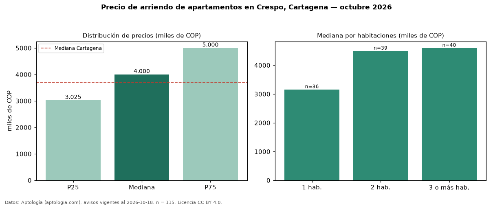

Precio de arriendo de apartamentos en Crespo, Cartagena — octubre 2026
En Crespo, Cartagena, la mediana de canon mensual de apartamentos es COP 4,00 millones, según 115 avisos vigentes. Frente a la mediana de Cartagena para apartamentos (COP 3,70 millones), queda 8 % por encima. Por metro cuadrado, la mediana es COP 44.495/m² al mes (n = 112 avisos con área), 1 % por encima de Cartagena (COP 44.118/m²). Con el precio por m² de venta del mismo segmento (COP 6,85 millones/m²), la rentabilidad bruta implícita es 7,8 % anual (aproximación con medianas de ofertas distintas). El área mediana anunciada es 90 m². El segmento con más oferta es el de 3 o más habitaciones (40 avisos, mediana COP 4,60 millones); pasar de 1 habitación a 3 o más habitaciones cambia la mediana +46 %. La administración mediana declarada es COP 600.000 al mes (n = 37), aparte del canon. Por precio mediano es el puesto 7 de 14 barrios de Cartagena con al menos 30 avisos de apartamentos en arriendo (COP): en la franja media. Datos: Aptología (aptologia.com), CC BY 4.0 — https://www.aptologia.com/arriendo/cartagena/crespo. Archivos: PDF, CSV con las cifras y gráfica PNG.

| Avisos únicos | 115 |
|---|---|
| Percentil 25 | COP 3.025.000 |
| Mediana | COP 4.000.000 |
| Percentil 75 | COP 5.000.000 |
| Mediana por m² | COP 44.494 |
Fuente: avisos vigentes de portales inmobiliarios recopilados por Aptología, deduplicados (mínimo 30 avisos únicos por celda). Precios pedidos, no cerrados. Fecha: 2026-10-18.